Убавините на грчките острови
Грција, колевката на светската култура, на туристите од цел свет им нуди острови од чија убавина биле инспирирани многу митови и легенди. Тука пловел Одисеј на своето епско враќање дома, тука се бореле џиновите и титаните, тука се пишувала историјата на модерниот свет. Прекрасна природа, зеленило, раскошни плажи, минатото и иднината кои се преплетуваат им даваат посебна убавина на грчките острови. Секој од нив е убав на свој начин: пусти планински падини, прекрасни песочни плажи, маслинови дрва, симпатични рибарски села и како круна на сè, културни споменици стари илјадници години.
Во Грција постојат околу 1400 острови. Од нив само 227 се населени, додека останатите претставуваат потполно мали и ненаселени места. Секој грчки остров е уникатен и ги чува сопствените традиции, култура и минато кое секаде во Грција е испреплетено со модерниот живот. Некои острови се мирни и тивки, некои се диви, нудат неверојатни плажи заплискани со прекрасна тиркизна вода, археолошки наоѓалишта, убава природа и гастрономски специјалитети за паметење.
КРФ
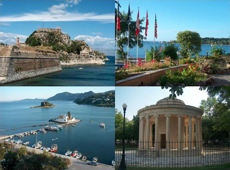
Островот Крф се наоѓа на Јонскиот архипелаг. Може да се пофали со бујна вегетација, прекрасни плажи, воодушевувачка архитектура, живописни села, весел ноќен живот и космополитски начин на живот. Крф е меѓу првите острови кои се свртија кон туризмот и денес има сè што неговите посетители можат да посакаат. Заради благата медитеранска клима и големата влажност обилува со бујна вегетација и диви растенија, поради што го носи епитетот „еден од најзелените острови во Грција“. Островот го добил името по нимфата Коркира, ќерката на реката Асопос во која се заљубил Посејдон, ја киднапирал и ја довел на Крф.
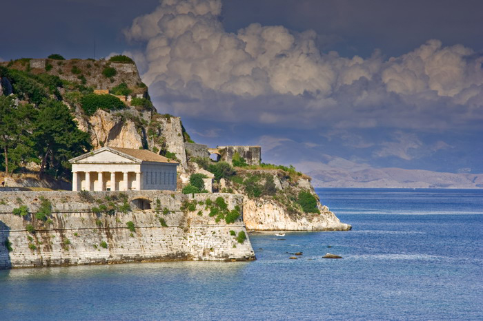
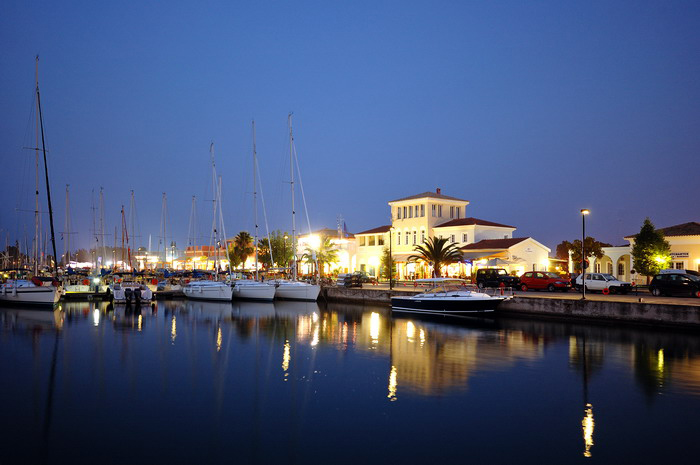
ЗАКИНТОС
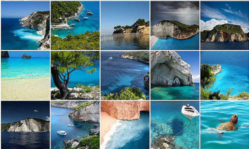
Островот Закинтос, или Занте, како што го нарекува локалното население, се наоѓа во Јонското Море. Од Пелопонез е одалечен околу 17 наутички милји, а од Кефалонија 13 наутички милји на југ. На секој чекор на овој остров со површина од 410 квадратни километри се чувствува духот на минатото и дамнешните цивилизации кои го населувале. И природата била многу дарежлива кон него. Мноштво камени предели со прекрасни песочни плажи и темни пештери во кои длабоко навлегува морето, и богата вегетација со буен растителен свет го прават овој остров еден од најубавите во Јонското Море и многу популарна туристичка дестинација. Кога на тоа ќе се додаде дека Закинтос е место каде во текот на периодот на репродукција своите јајца ги положува загрозениот вид желки карета (Caretta-Caretta), како и тоа дека во водите околу него може да се видат прочуените Monachus - монк фоки (единствениот вид фоки кои можат да се најдат на Медитеранот), тогаш навистина се гледа целата убавина и привлечност на овој остров.
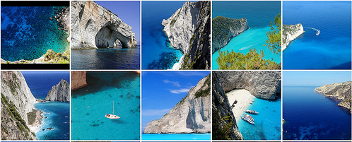
Една од најпознатите и најубавите плажи на Закинтос е плажата Navagio, со прекрасно сафирно-сино море и ситен песок во камениот кањон насреде кој стои засуканиот криумчарски брод. Оваа плажа е заслужна за многубројните туристи кои секоја година доаѓаат на Закинтос и се смета за една од најфотографираните места на светот.
КЕФАЛОНИЈА
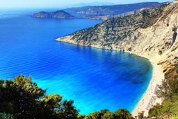
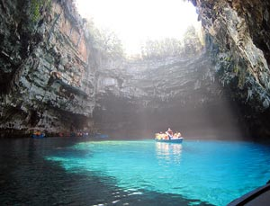
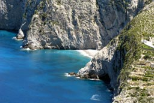
Кефалонија е најголемиот остров во Јонското море, сместен јужно од Лефкада и Итака и северно од Закинтос. Претежно е планински остров, се состои од два поврзани дела - источен, кој е свртен кон копното и има прекрасни плажи кои постепено влегуваат во морето и западен, чие копно стрмоглаво се спушта во морето. Кефалонија изобилува со природни богатства кои на овој остров му даваат посебна привлечност. На врвот на островот се наоѓа т.н. „црна шума“, раритет во Грција и во Европа, дом на кефалонискиот бор кој до неодамна можеше да се најде само на овој остров. Бидејќи составот на карпите е варовнички, ерозијата направила бројни пештери и пукнатини во тлото. Крајбрежјето е преполно со заливи и ртови. Накратко, Кефалонија е остров со чудесни пејзажи, прекрасни плажи, симпатични места и мир и спокој.
ТАСОС
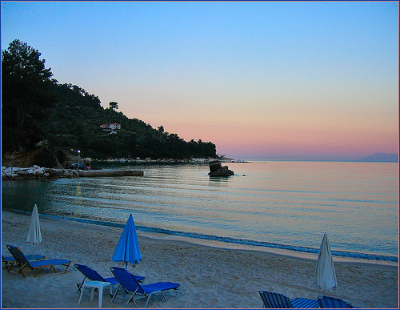
Тасос е најсеверниот и најзелениот грчки остров. Боговите му подариле раскошна убавина, прекрасни плажи, заливи и предели од кои застанува здивот. Често го нарекуваат „смарагдниот остров“ заради проѕирната и чиста вода со азурна боја, или „шума што плови“ заради густата вегетација. Митологијата вели дека Тасос е остров на Сирените, кој тие го одбрале за на неговите скриени песочни плажи да се сончаат и да ги одмараат своите убави тела споредувајќи ја својата со убавината на овој прекрасен остров. Ниту Одисеј не му одолеал на островот бидејќи, поминувајќи покрај заливот на сирените и слушајќи ја нивната песна, дошол во искушение засекогаш да остане таму. Привлечен од неговата убавина и познатиот Хипократ живеел на него 4 години кога и ги напишал некои од неговите најголеми дела. За богатата историја на Тасос сведочат многубројните остатоци од антиката, кои истовремено го прават овој остров еден огромен музеј.
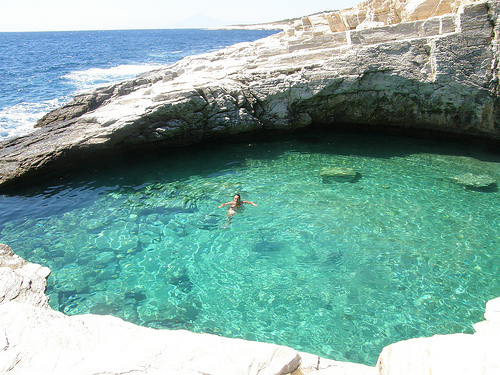
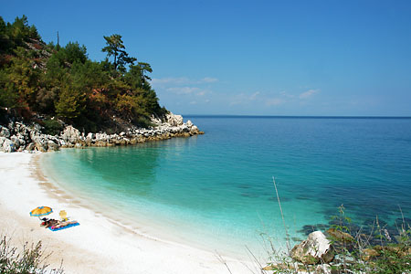